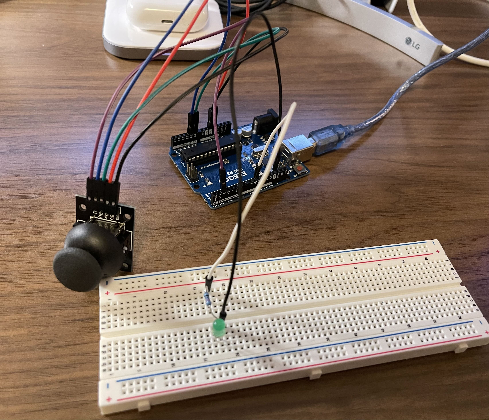

Introduction
For Assignment 6, I built a circuit ...
Hardware
The hardware setup includes:
- Arduino Board
- Joystick Module
- LED
- Resistor (220Ω for LED)
- A breadboard and jumper wires for connections
Resistor Calculations
LED Resistor (220Ω):
Calculated using Ohm’s Law:
R = (VA - VL) / I
R = (5 - 1.8) / 0.02 = 160Ω
A 220Ω resistor was chosen for each LED (rounded to the nearest standard value)
Schematic

Circuit
Arduino Code
const int ledPin = 9; // LED connected to pin 9
const int VRx = A0; // Joystick X-axis (analog)
const int VRy = A1; // Joystick Y-axis (analog)
const int button = 2; // Joystick button (digital)
// Variables to store joystick readings
int xValue, yValue, buttonState;
void setup() {
Serial.begin(9600); // Match this with p5.js
pinMode(ledPin, OUTPUT);
pinMode(button, INPUT_PULLUP); // Joystick button with pull-up resistor
digitalWrite(ledPin, LOW); // Start with LED off
}
void loop() {
// Read joystick analog values (0-1023)
xValue = analogRead(VRx);
yValue = analogRead(VRy);
// Read joystick button (LOW when pressed, HIGH when not)
buttonState = digitalRead(button) == LOW ? 1 : 0;
// Send joystick and button data as CSV format
Serial.print(xValue);
Serial.print(",");
Serial.print(yValue);
Serial.print(",");
Serial.println(buttonState);
// Check for Serial input from p5.js to control LED
if (Serial.available() > 0) {
String command = Serial.readStringUntil('\n'); // Read incoming message
command.trim(); // Clean up input
if (command == "LED_ON") {
digitalWrite(ledPin, HIGH); // Turn LED ON
}
else if (command == "LED_OFF") {
digitalWrite(ledPin, LOW); // Turn LED OFF
}
}
delay(50); // Small delay to stabilize readings
}
JavaScript
[insert code here]